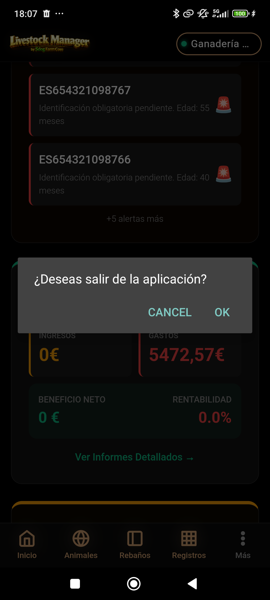
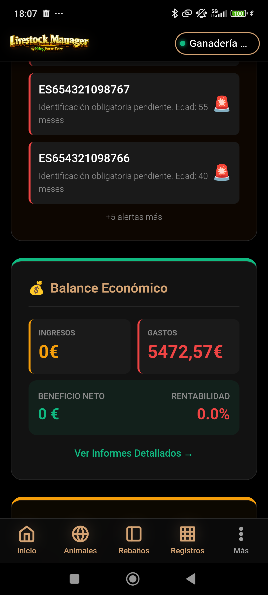
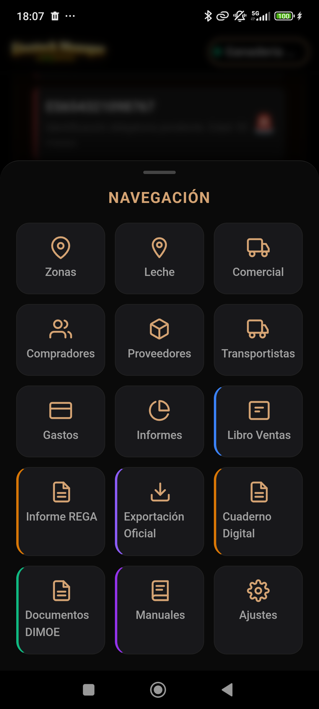
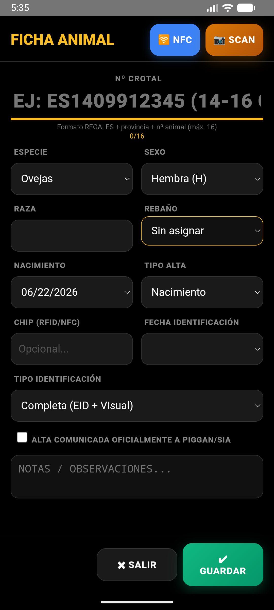
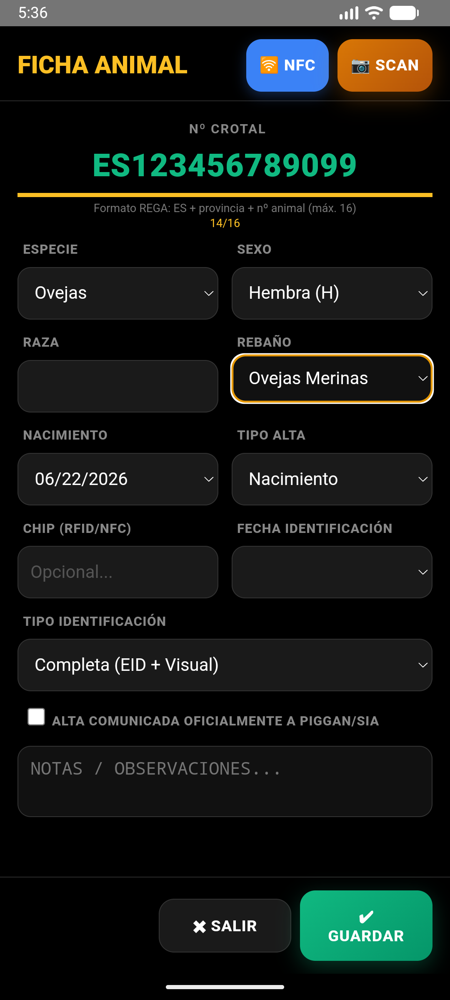
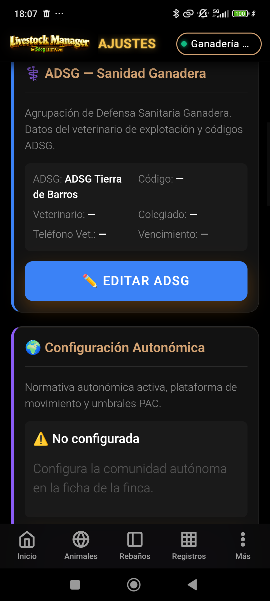
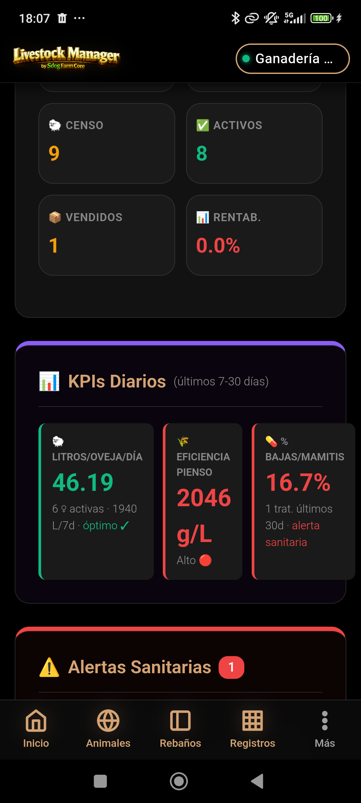
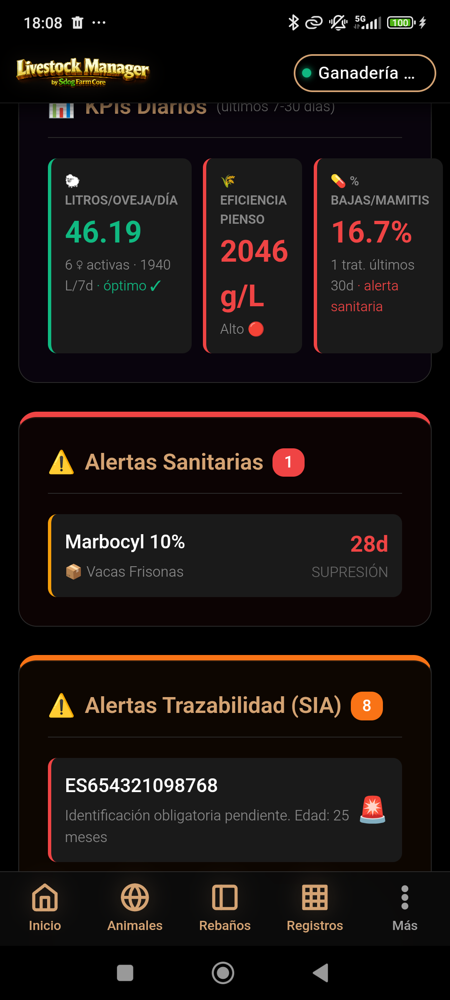
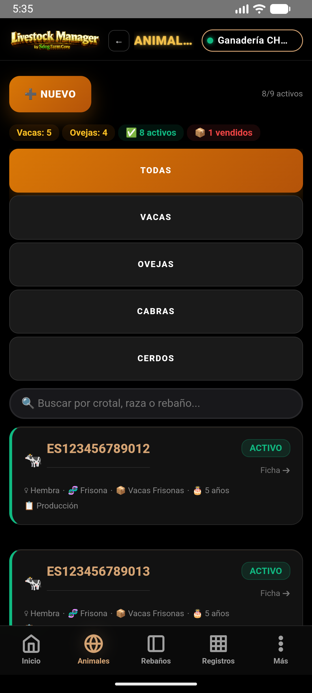

🐄 Animales y Rebaños
Gestión del Censo — Guía completa paso a paso
MANUAL PRÁCTICO · Crotal, rebaños, estados y trazabilidad
Gestión del Censo — Guía completa paso a paso
Este manual documenta los módulos de Animales y Rebaños de Livestock Manager. El censo es la base de toda la gestión ganadera: sin animales correctamente registrados no es posible registrar pesajes, eventos sanitarios, partos, producciones ni ventas.
La estructura jerárquica de la app organiza la explotación en cuatro niveles: Finca → Zonas → Rebaños → Animales. Conocer esta estructura es fundamental para entender cómo fluye la información en los informes.
Toda la información de la app se organiza en una jerarquía de cuatro niveles. Entender esta estructura es clave para imputar correctamente gastos, pesajes y producciones.
| Nivel | Descripción | Se crea en |
|---|---|---|
| Finca | La explotación ganadera completa. Solo existe una finca activa a la vez. | Asistente de configuración inicial |
| Zona | División física de la finca (parcela, nave, cobertizo). Los gastos de electricidad y fitosanitarios se imputan a zonas. | Ajustes → Zonas |
| Rebaño | Grupo de animales de la misma especie y propósito productivo, ubicado en una zona. | Animales → Rebaños → ➕ Nuevo |
| Animal | El individuo concreto, identificado por su crotal. Pertenece a un rebaño. | Animales → ➕ Añadir Animal |
Los rebaños son los grupos productivos de la explotación. Antes de dar de alta animales, debes tener al menos un rebaño creado.
Accede desde Animales → pestaña Rebaños → ➕ Nuevo Rebaño.
| Campo | Descripción |
|---|---|
| Nombre | Nombre descriptivo del rebaño (ej: "Vacas Frisonas", "Ovejas Merinas") |
| Tipo | Propósito productivo del rebaño: Madres, Cebo o Recría |
| Especie | Especie del rebaño: Vacas, Ovejas, Cabras, Cerdos, etc. |
| Zona Actual | Zona de la finca donde está ubicado el rebaño (nombre de zona) |
| Capacidad Total | Número máximo de animales que puede albergar el rebaño |
| Tipo de rebaño | Descripción | Flujo productivo |
|---|---|---|
| Madres | Hembras reproductoras activas (vacas lecheras, ovejas de ordeño, madres de cría) | Producción de leche, partos, cría |
| Cebo | Animales en engorde para sacrificio (terneros, corderos de cebo) | Pesajes de engorde, venta de carne |
| Recría | Animales jóvenes en desarrollo antes de incorporarse a madres o cebo | Control de crecimiento, seguimiento sanitario |
El alta de un animal es el registro individual de cada cabeza de ganado en el sistema. El campo más importante es el número de identificación (crotal), que debe seguir el formato normativo.
Accede desde Animales → ➕ Añadir Animal o desde la vista de un rebaño concreto.
| Campo | Obligatorio | Descripción |
|---|---|---|
| Número de Identificación | Sí | Crotal/caravana normativo: 2 letras de país + 12 dígitos (ej: ES123456789012). Ver sección 4. |
| Especie | No | Vacas, Ovejas, Cabras, Cerdos, etc. |
| Tipo | No | Descripción del tipo de animal (ej: Vaca Frisona, Ternero, Oveja Merina, Cordero). Por defecto: "Sin Clasificar". |
| Estado | No | activo / vendido / baja. Por defecto: activo. |
| Fecha de nacimiento | No | Fecha de nacimiento del animal (formato YYYY-MM-DD) |
| Sexo | No | H (hembra) o M (macho) |
| Raza | No | Raza del animal (ej: Frisona, Merina, Charolais) |
| Peso Inicial (kg) | No | Peso al dar de alta el animal. Si se introduce, se registra automáticamente como primer pesaje. |
| Rebaño | No | Rebaño al que pertenece el animal |
| Categoría | No | Categoría productiva del animal (ej: Producción, Recría, Madres, Cebo) |
| DIB / Nº Pasaporte | No | Número de pasaporte o DIB (Documento de Identificación Bovina). Debe ser único si se introduce. |
| Madre (id) | No | ID de la madre del animal, para establecer la vinculación madre-cría |
El número de identificación (crotal, caravana o número de pasaporte) es el identificador único de cada animal en el sistema SITRAN (Sistema de Trazabilidad Animal Nacional). La app valida que el formato sea correcto antes de guardar.
XX000000000000ES para España)ES123456789012| Ejemplo | Válido | Motivo |
|---|---|---|
ES123456789012 | ✅ Sí | ES + 12 dígitos = formato correcto |
ES654321098765 | ✅ Sí | ES + 12 dígitos = formato correcto |
ES12345 | ❌ No | Solo 5 dígitos, faltan 7 |
es123456789012 | ❌ No | Las letras deben ser mayúsculas (la app las convierte automáticamente) |
123456789012 | ❌ No | Faltan las 2 letras de código de país |
es123456789012, se guardará como ES123456789012.
La app incorpora un lector de crotales basado en la cámara del dispositivo o en un lector externo de código de barras/QR compatible. Permite capturar el número de identificación del animal sin teclearlo manualmente.
La vinculación madre-cría permite establecer la relación de parentesco entre una hembra reproductora y sus crías. Es fundamental para la trazabilidad reproductiva y para los informes de fertilidad y productividad.
madre_id del animalCada animal tiene un estado que refleja su situación actual en la explotación. El estado afecta a qué operaciones se pueden realizar con el animal.
| Estado | Valor interno | Descripción | Restricciones |
|---|---|---|---|
| ACTIVO | activo |
El animal está en la explotación, productivo o en desarrollo. | Ninguna. Se puede operar con total normalidad. |
| VENDIDO | vendido |
El animal ha sido vendido (sacrificio o venta en vivo). Se marca automáticamente al completar una Venta Masiva. | No se puede eliminar. No aparece en los listados activos. Conserva todo su historial. |
| BAJA | baja |
El animal ha causado baja por muerte, pérdida u otra causa no comercial. | No se puede eliminar si tiene pesajes o eventos registrados. Conserva el historial. |
La demo CHAMORRO incluye 3 rebaños y 9 animales que ilustran los diferentes tipos y estados:
| Nombre | Tipo | Especie | Zona | Capacidad |
|---|---|---|---|---|
| Vacas Frisonas | Madres | Vacas | Parcela Norte 42ha | 50 |
| Terneros Cebo | Cebo | Vacas | Parcela Norte 42ha | 30 |
| Ovejas Merinas | Madres | Ovejas | Pastos Este 15ha | 200 |
| Crotal | Tipo | Sexo | Raza | Peso inicial | Estado | Rebaño |
|---|---|---|---|---|---|---|
| ES123456789012 | Vaca Frisona | H | Frisona | 580 kg | ACTIVO | Vacas Frisonas |
| ES123456789013 | Vaca Frisona | H | Frisona | 620 kg | ACTIVO | Vacas Frisonas |
| ES123456789014 | Vaca Frisona | H | Frisona | 510 kg | ACTIVO | Vacas Frisonas |
| ES123456789015 | Ternero | M | Frisona | 180 kg | ACTIVO | Terneros Cebo |
| ES123456789016 | Ternero | M | Frisona | 195 kg | VENDIDO | Terneros Cebo |
| ES654321098765 | Oveja Merina | H | Merina | 55 kg | ACTIVO | Ovejas Merinas |
| ES654321098766 | Oveja Merina | H | Merina | 52 kg | ACTIVO | Ovejas Merinas |
| ES654321098767 | Oveja Merina | H | Merina | 58 kg | ACTIVO | Ovejas Merinas |
| ES654321098768 | Cordero | M | Merina | 60 kg | ACTIVO | Ovejas Merinas |
Relaciones adicionales en la demo:
ES1234567890XX y los ovinos usan ES6543210987XX. En una explotación
real, los crotales son asignados oficialmente por el REGA y no se pueden elegir libremente.
Secuencia visual completa del censo: estructura, rebaños, alta de animal y genealogía.









